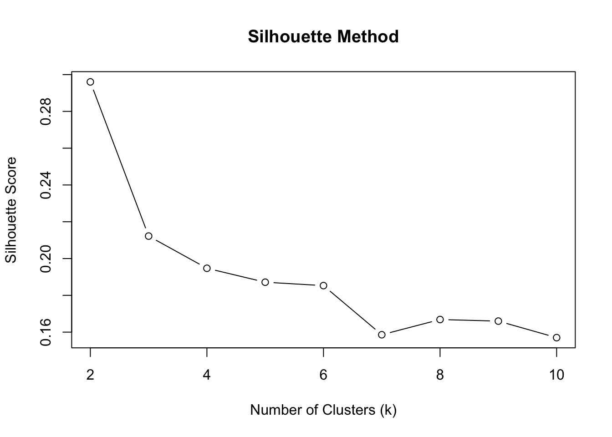
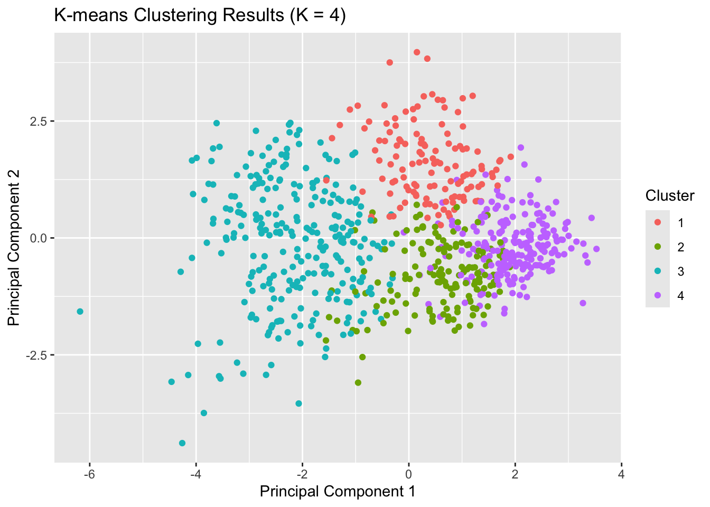

Clustering Insights into Diabetes Risk Factors
Franco
2024-07-02
Executive Summary
Background
Diabetes is a significant public health issue with varying prevalence across different demographic groups. Understanding the underlying characteristics of these groups can aid in developing targeted interventions to manage and prevent diabetes effectively.
Objective
The objective of this study was to identify distinct clusters within a population based on various health and demographic parameters and to develop tailored strategic interventions for each cluster to improve diabetes management and prevention.
Results
Four distinct clusters were identified cluster 1, a high-risk group with 99% diabetes prevalence, severe obesity, and elevated glucose and insulin levels. Cluster 2, older individuals with moderate obesity, no diabetes, and the highest average number of pregnancies. Cluster 3, younger individuals with severe obesity, no diabetes, but a considerable genetic predisposition. Cluster 4, youngest group with low diabetes prevalence, overweight, and the lowest glucose and insulin levels.
Conclusion
Tailored interventions for each cluster are essential. Cluster 1 requires intensive medical and lifestyle interventions. Cluster 2 needs preventive measures to maintain their health. Cluster 3 should focus on weight management programs. Cluster 4 benefits from promoting a healthy lifestyle to prevent future health risks. These targeted strategies are crucial for effective diabetes management and prevention across different population segments.
Exploratory Data Analysis
In this section, an exploratory data analysis (EDA) was conducted on the diabetes dataset. The primary objective was to understand the distribution of each variable, identify missing values, and explore potential relationships between features. This analysis served as a foundation for subsequent modeling and predictive analysis.
Data Overview
The dataset was loaded and the first few rows were displayed to get an initial glimpse of the data structure. A summary of the dataset was generated to gain insights into the central tendency and dispersion of each feature. Missing values were checked in the dataset, as they can significantly impact the analysis and modeling. The number of missing values in each column was calculated and displayed.
## Rows: 768 Columns: 9
## ── Column specification ────────────────────────────────────────────────────────────────────────────────────────────────────────────
## Delimiter: ","
## dbl (9): Pregnancies, Glucose, BloodPressure, SkinThickness, Insulin, BMI, DiabetesPedigreeFunction, Age, Outcome
##
## ℹ Use `spec()` to retrieve the full column specification for this data.
## ℹ Specify the column types or set `show_col_types = FALSE` to quiet this message.## # A tibble: 6 × 9
## Pregnancies Glucose BloodPressure SkinThickness Insulin BMI DiabetesPedigreeFunction Age Outcome
## <dbl> <dbl> <dbl> <dbl> <dbl> <dbl> <dbl> <dbl> <dbl>
## 1 6 148 72 35 0 33.6 0.627 50 1
## 2 1 85 66 29 0 26.6 0.351 31 0
## 3 8 183 64 0 0 23.3 0.672 32 1
## 4 1 89 66 23 94 28.1 0.167 21 0
## 5 0 137 40 35 168 43.1 2.29 33 1
## 6 5 116 74 0 0 25.6 0.201 30 0## Pregnancies Glucose BloodPressure SkinThickness Insulin BMI DiabetesPedigreeFunction
## Min. : 0.000 Min. : 0.0 Min. : 0.00 Min. : 0.00 Min. : 0.0 Min. : 0.00 Min. :0.0780
## 1st Qu.: 1.000 1st Qu.: 99.0 1st Qu.: 62.00 1st Qu.: 0.00 1st Qu.: 0.0 1st Qu.:27.30 1st Qu.:0.2437
## Median : 3.000 Median :117.0 Median : 72.00 Median :23.00 Median : 30.5 Median :32.00 Median :0.3725
## Mean : 3.845 Mean :120.9 Mean : 69.11 Mean :20.54 Mean : 79.8 Mean :31.99 Mean :0.4719
## 3rd Qu.: 6.000 3rd Qu.:140.2 3rd Qu.: 80.00 3rd Qu.:32.00 3rd Qu.:127.2 3rd Qu.:36.60 3rd Qu.:0.6262
## Max. :17.000 Max. :199.0 Max. :122.00 Max. :99.00 Max. :846.0 Max. :67.10 Max. :2.4200
## Age Outcome
## Min. :21.00 Min. :0.000
## 1st Qu.:24.00 1st Qu.:0.000
## Median :29.00 Median :0.000
## Mean :33.24 Mean :0.349
## 3rd Qu.:41.00 3rd Qu.:1.000
## Max. :81.00 Max. :1.000# Check for missing values
missing_values <- sapply(data, function(x) sum(is.na(x)))
print(missing_values)## Pregnancies Glucose BloodPressure SkinThickness Insulin
## 0 0 0 0 0
## BMI DiabetesPedigreeFunction Age Outcome
## 0 0 0 0Distribution of Features
Histograms were constructed for each feature to visualise their distributions. These visualisations highlight how data points are distributed across different ranges, offering insights into the prevalence and spread of each variable.
Histograms
# Helper function to create histograms
create_histogram <- function(data, column, title, binwidth, fill_color) {
ggplot(data, aes_string(x = column)) +
geom_histogram(aes(y = 100 * (..count..) / sum(..count..)), binwidth = binwidth, colour = "black", fill = fill_color) +
ggtitle(title) +
ylab("Percentage") +
theme_minimal() +
theme(plot.title = element_text(size = 14, face = "bold"),
axis.title = element_text(size = 12),
axis.text = element_text(size = 8))
}
# Create histograms for each feature with new colors
p1 <- create_histogram(data, "Pregnancies", "Number of Pregnancies", 1, "#1f77b4") # Blue## Warning: `aes_string()` was deprecated in ggplot2 3.0.0.
## ℹ Please use tidy evaluation idioms with `aes()`.
## ℹ See also `vignette("ggplot2-in-packages")` for more information.
## This warning is displayed once every 8 hours.
## Call `lifecycle::last_lifecycle_warnings()` to see where this warning was generated.p2 <- create_histogram(data, "Glucose", "Glucose", 5, "#ff7f0e") # Orange
p3 <- create_histogram(data, "BloodPressure", "Blood Pressure", 2, "#2ca02c") # Green
p4 <- create_histogram(data, "SkinThickness", "Skin Thickness", 2, "#d62728") # Red
p5 <- create_histogram(data, "Insulin", "Insulin", 20, "#9467bd") # Purple
p6 <- create_histogram(data, "BMI", "Body Mass Index", 1, "#8c564b") # Brown
p7 <- create_histogram(data, "DiabetesPedigreeFunction", "Diabetes Pedigree Function", 0.05, "#e377c2") # Pink
p8 <- create_histogram(data, "Age", "Age", 1, "#7f7f7f") # Gray
# Arrange plots in a grid layout with larger size
grid.arrange(p1, p2, p3, p4, p5, p6, p7, p8, ncol = 2)## Warning: The dot-dot notation (`..count..`) was deprecated in ggplot2 3.4.0.
## ℹ Please use `after_stat(count)` instead.
## This warning is displayed once every 8 hours.
## Call `lifecycle::last_lifecycle_warnings()` to see where this warning was generated.Histogram Analysis
Number of Pregnancies
The histogram reveals that a significant portion of individuals in the dataset have 0 to 5 pregnancies, indicating a prevalent demographic within the study group. A smaller proportion of individuals have higher numbers of pregnancies, such as 10, 15, and 20.
Glucose
The distribution of glucose levels appears normal, with a peak around 80 to 150. This suggests that most individuals in the dataset have glucose levels within this range, which is crucial for understanding metabolic health.
Blood Pressure
The histogram for blood pressure shows a right-skewed distribution, indicating that a substantial number of individuals have blood pressure readings clustered around 70 to 80. This skewness implies potential variations in blood pressure across the dataset.
Skin Thickness
Skin thickness distribution is also right-skewed, with most individuals having thickness measurements between 20 and 40. This metric is essential in assessing overall health and potential metabolic conditions.
Insulin
The insulin distribution is is approximately, with a concentration of individuals showing medium insulin levels, particularly around 100.
Diabetes Pedigree Function
The histogram for the diabetes pedigree function reveals a right-skewed distribution, with the majority of individuals having function values less than 1. This metric provides insights into the genetic predisposition to diabetes within the study population.
BMI (Body Mass Index)
BMI distribution appears roughly normal, centered around 20 to 40. This standard measure of body composition highlights the prevalence of healthy weight ranges within the dataset.
Age
The age distribution is right-skewed, indicating that a significant number of individuals are younger, with ages clustering around 20 to 40. Understanding age demographics is crucial for analysing health outcomes across different age groups.
Summary
the histograms provide valuable insights into the distribution and central tendencies of critical health metrics within the diabetes dataset. These findings serve as a foundational analysis for further exploration and modeling efforts, contributing to informed decision-making in healthcare and medical research.
Relationships Between Features
Density plots were created to explore the distribution of each feature, segmented by diabetes outcome. These plots help identify potential patterns or differences in feature distributions between individuals with and without diabetes. Furthermore, scatter plots were used to visualise the relationship between pairs of features, with data points color-coded based on the outcome variable (diabetes presence). This helped in identifying any patterns or trends that existed between these features.
Density Plot
# Helper function to create density plots with outcome comparison
create_density_with_outcome <- function(data, column, title) {
mean_values <- data %>%
group_by(Outcome) %>%
summarize(mean_value = mean(get(column), na.rm = TRUE)) %>%
ungroup()
ggplot(data, aes_string(x = column, fill = "as.factor(Outcome)")) +
geom_density(alpha = 0.5) +
geom_vline(data = mean_values, aes(xintercept = mean_value, color = as.factor(Outcome)),
linetype = "dotted", size = 1) +
scale_fill_manual(values = c("#FFFF00", "#008080")) + # Yellow and Teal hex codes
scale_color_manual(values = c("red", "blue")) +
labs(title = title, fill = "Outcome", color = "Outcome") +
theme_minimal() +
theme(plot.title = element_text(size = 10, face = "bold"),
axis.title = element_text(size = 10),
axis.text = element_text(size = 8))
}
# Create density plots for each feature with outcome comparison
p1 <- create_density_with_outcome(data, "Pregnancies", "Pregnancies vs Diabetes")## Warning: Using `size` aesthetic for lines was deprecated in ggplot2 3.4.0.
## ℹ Please use `linewidth` instead.
## This warning is displayed once every 8 hours.
## Call `lifecycle::last_lifecycle_warnings()` to see where this warning was generated.p2 <- create_density_with_outcome(data, "Glucose", "Glucose vs Diabetes")
p3 <- create_density_with_outcome(data, "BloodPressure", "Blood Pressure vs Diabetes")
p4 <- create_density_with_outcome(data, "SkinThickness", "Skin Thickness vs Diabetes")
p5 <- create_density_with_outcome(data, "Insulin", "Insulin vs Diabetes")
p6 <- create_density_with_outcome(data, "BMI", "BMI vs Diabetes")
p7 <- create_density_with_outcome(data, "DiabetesPedigreeFunction", "Diabetes Pedigree Function vs Diabetes")
p8 <- create_density_with_outcome(data, "Age", "Age vs Diabetes")
# Arrange plots in a grid layout with larger size
grid.arrange(p1, p2, p3, p4, p5, p6, p7, p8, ncol = 2)Density Plot Analysis
Pregnancies vs. Diabetes Outcome
The density plots show that individuals with diabetes tend to have a slightly higher mean number of pregnancies compared to those without diabetes. This suggests a possible correlation between higher pregnancy numbers and diabetes risk.
Glucose vs. Diabetes Outcome
The distribution of glucose levels shows that individuals with diabetes have significantly higher mean glucose levels than those without diabetes. This strong differentiation highlights glucose as a critical factor in diabetes diagnosis and management.
Blood Pressure vs. Diabetes Outcome
Blood pressure distributions reveal a subtle difference in mean values between individuals with and without diabetes. While there is a slight variation, it suggests that blood pressure alone may not be a strong differentiator for diabetes in this population.
Skin Thickness vs. Diabetes Outcome
The skin thickness density plots indicate little difference between the two groups, suggesting that this metric does not strongly distinguish between diabetes and non-diabetes individuals.
Insulin vs. Diabetes Outcome
The insulin level distributions show that individuals with diabetes tend to have slightly higher mean insulin levels. This finding supports the role of hyperinsulinaemia in the development of diabetes.
BMI (Body Mass Index) vs. Diabetes Outcome
BMI is higher on average for individuals with diabetes. This correlation aligns with known associations between higher body mass index and increased diabetes risk.
Diabetes Pedigree Function vs. Diabetes Outcome
The diabetes pedigree function values are slightly higher for individuals with diabetes, indicating a possible genetic predisposition in these cases.
Age vs. Diabetes Outcome
Older individuals tend to have a higher mean age in the diabetes group. This suggests that age is a significant factor in the prevalence of diabetes, with older individuals being more at risk.
Scatter Plot
# Function to create scatter plot with outcome comparison
create_scatter_with_outcome <- function(data, x_col, y_col, x_title, y_title) {
ggplot(data, aes_string(x = x_col, y = y_col, color = "as.factor(Outcome)")) +
geom_point(alpha = 0.7) +
labs(x = x_title, y = y_title, color = "Outcome") +
theme_minimal() +
theme(plot.title = element_text(size = 14, face = "bold"),
axis.title = element_text(size = 12),
axis.text = element_text(size = 10))
}
# Create scatter plot for a couple of variables
scatter_plot1 <- create_scatter_with_outcome(data, "Glucose", "BMI", "Glucose", "BMI")
scatter_plot2 <- create_scatter_with_outcome(data, "Age", "BloodPressure", "Age", "Blood Pressure")
# Arrange plots in a grid layout
grid.arrange(scatter_plot1, scatter_plot2, ncol = 2)Scatter Plot Analysis
Glucose vs. BMI
The scatter plot of Glucose levels against BMI (Body Mass Index) offers valuable insights into the relationship between these two variables. Glucose levels range from 0 to 200, while BMI values span from 0 to 60.
In examining the scatter plot, a noticeable positive correlation
between Glucose levels and BMI is evident.
Higher Glucose levels generally correspond with higher BMI
values. This trend is particularly observable among individuals with
diabetes, who typically exhibit both elevated Glucose and
BMI levels compared to those without diabetes. However, the
distinction between the two groups in this plot is not very pronounced,
suggesting that additional factors might also play significant roles in
differentiating between the outcomes of diabetes and non-diabetes.
Age vs. Blood Pressure
The scatter plot analysing Age versus
Blood Pressure delves into the interaction between these
two variables. Age ranges from 20 to 80 years, and Blood
Pressure values extend from 0 to 125.
Observations from this scatter plot indicate no clear linear
relationship between Age and Blood Pressure.
The data points are widely scattered, highlighting a substantial
variability in Blood Pressure across different ages. This variability
suggests that Blood Pressure is influenced by multiple factors beyond
Age alone. Despite the lack of a strong linear relationship, a slight
trend of increasing Blood Pressure with Age is
discernible. This trend aligns with the general medical understanding
that Blood Pressure tends to rise as individuals age.
These scatter plots visually depict the complex relationships between these health metrics and their association with diabetes.
Pairwise Relationships
Pairwise scatter plots were utilized to examine relationships between pairs of numeric variables. Each plot included data points colored by diabetes outcome, facilitating visual identification of correlations or trends between variables.
Pairwise Scatter Plot
# Convert Outcome to factor with appropriate levels
data$Outcome <- factor(data$Outcome, levels = c(0, 1))
# Select only numeric columns (excluding "Outcome")
numeric_data <- data[, sapply(data, is.numeric) & !(names(data) %in% "Outcome")]
# Define a custom color palette for Outcome
my_colors <- c("#1f77b4", "#ff7f0e") # Blue and Orange
# Create a custom wrap function for points to include color
wrap_points <- function(data, mapping, ...) {
ggplot(data = data, mapping = mapping) +
geom_point(alpha = 0.5, ...) +
scale_color_manual(values = my_colors)
}
# Plot pairwise scatter plots using GGally with custom aesthetics
ggpairs(data,
columns = which(sapply(data, is.numeric) & !(names(data) %in% "Outcome")),
mapping = ggplot2::aes(color = Outcome),
lower = list(continuous = wrap_points),
upper = list(continuous = wrap("cor", size = 3)),
diag = list(continuous = wrap("barDiag", binwidth = 1)),
title = "Pairwise Scatter Plots of Numeric Variables"
)## plot: [1, 1] [=>---------------------------------------------------------------------------------------------------] 2% est: 0s
## plot: [1, 2] [==>--------------------------------------------------------------------------------------------------] 3% est: 3s
## plot: [1, 3] [====>------------------------------------------------------------------------------------------------] 5% est: 4s
## plot: [1, 4] [=====>-----------------------------------------------------------------------------------------------] 6% est: 4s
## plot: [1, 5] [=======>---------------------------------------------------------------------------------------------] 8% est: 4s
## plot: [1, 6] [========>--------------------------------------------------------------------------------------------] 9% est: 4s
## plot: [1, 7] [==========>------------------------------------------------------------------------------------------] 11% est: 4s
## plot: [1, 8] [============>----------------------------------------------------------------------------------------] 12% est: 4s
## plot: [2, 1] [=============>---------------------------------------------------------------------------------------] 14% est: 4s
## plot: [2, 2] [===============>-------------------------------------------------------------------------------------] 16% est: 4s
## plot: [2, 3] [================>------------------------------------------------------------------------------------] 17% est: 4s
## plot: [2, 4] [==================>----------------------------------------------------------------------------------] 19% est: 4s
## plot: [2, 5] [====================>--------------------------------------------------------------------------------] 20% est: 4s
## plot: [2, 6] [=====================>-------------------------------------------------------------------------------] 22% est: 4s
## plot: [2, 7] [=======================>-----------------------------------------------------------------------------] 23% est: 4s
## plot: [2, 8] [========================>----------------------------------------------------------------------------] 25% est: 4s
## plot: [3, 1] [==========================>--------------------------------------------------------------------------] 27% est: 4s
## plot: [3, 2] [===========================>-------------------------------------------------------------------------] 28% est: 4s
## plot: [3, 3] [=============================>-----------------------------------------------------------------------] 30% est: 4s
## plot: [3, 4] [===============================>---------------------------------------------------------------------] 31% est: 4s
## plot: [3, 5] [================================>--------------------------------------------------------------------] 33% est: 4s
## plot: [3, 6] [==================================>------------------------------------------------------------------] 34% est: 3s
## plot: [3, 7] [===================================>-----------------------------------------------------------------] 36% est: 3s
## plot: [3, 8] [=====================================>---------------------------------------------------------------] 38% est: 3s
## plot: [4, 1] [======================================>--------------------------------------------------------------] 39% est: 3s
## plot: [4, 2] [========================================>------------------------------------------------------------] 41% est: 3s
## plot: [4, 3] [==========================================>----------------------------------------------------------] 42% est: 3s
## plot: [4, 4] [===========================================>---------------------------------------------------------] 44% est: 3s
## plot: [4, 5] [=============================================>-------------------------------------------------------] 45% est: 3s
## plot: [4, 6] [==============================================>------------------------------------------------------] 47% est: 3s
## plot: [4, 7] [================================================>----------------------------------------------------] 48% est: 3s
## plot: [4, 8] [=================================================>---------------------------------------------------] 50% est: 3s
## plot: [5, 1] [===================================================>-------------------------------------------------] 52% est: 3s
## plot: [5, 2] [=====================================================>-----------------------------------------------] 53% est: 2s
## plot: [5, 3] [======================================================>----------------------------------------------] 55% est: 2s
## plot: [5, 4] [========================================================>--------------------------------------------] 56% est: 2s
## plot: [5, 5] [=========================================================>-------------------------------------------] 58% est: 2s
## plot: [5, 6] [===========================================================>-----------------------------------------] 59% est: 2s
## plot: [5, 7] [=============================================================>---------------------------------------] 61% est: 2s
## plot: [5, 8] [==============================================================>--------------------------------------] 62% est: 2s
## plot: [6, 1] [================================================================>------------------------------------] 64% est: 2s
## plot: [6, 2] [=================================================================>-----------------------------------] 66% est: 2s
## plot: [6, 3] [===================================================================>---------------------------------] 67% est: 2s
## plot: [6, 4] [====================================================================>--------------------------------] 69% est: 2s
## plot: [6, 5] [======================================================================>------------------------------] 70% est: 2s
## plot: [6, 6] [========================================================================>----------------------------] 72% est: 2s
## plot: [6, 7] [=========================================================================>---------------------------] 73% est: 1s
## plot: [6, 8] [===========================================================================>-------------------------] 75% est: 1s
## plot: [7, 1] [============================================================================>------------------------] 77% est: 1s
## plot: [7, 2] [==============================================================================>----------------------] 78% est: 1s
## plot: [7, 3] [===============================================================================>---------------------] 80% est: 1s
## plot: [7, 4] [=================================================================================>-------------------] 81% est: 1s
## plot: [7, 5] [===================================================================================>-----------------] 83% est: 1s
## plot: [7, 6] [====================================================================================>----------------] 84% est: 1s
## plot: [7, 7] [======================================================================================>--------------] 86% est: 1s
## plot: [7, 8] [=======================================================================================>-------------] 88% est: 1s
## plot: [8, 1] [=========================================================================================>-----------] 89% est: 1s
## plot: [8, 2] [===========================================================================================>---------] 91% est: 0s
## plot: [8, 3] [============================================================================================>--------] 92% est: 0s
## plot: [8, 4] [==============================================================================================>------] 94% est: 0s
## plot: [8, 5] [===============================================================================================>-----] 95% est: 0s
## plot: [8, 6] [=================================================================================================>---] 97% est: 0s
## plot: [8, 7] [==================================================================================================>--] 98% est: 0s
## plot: [8, 8] [=====================================================================================================]100% est: 0sPairwise Scatter Plot Analysis
This analysis explores the relationships between different numerical variables related to diabetes through scatter plots. Each plot highlights the interaction between two variables, providing insights into potential correlations and patterns.
Pregnancies vs. Other Variables
The scatter plots show that the number of pregnancies has a weak
positive correlation with Glucose levels. However, no
strong patterns or significant correlations emerge with other variables,
indicating that the number of pregnancies may not be a strong predictor
for other health metrics in this dataset.
Glucose vs. Other Variables
Glucose levels exhibit a positive correlation with BMI
and Insulin (Body Mass Index), suggesting that individuals
with higher glucose levels tend to have higher BMI and
Insulin values. This correlation aligns with the
understanding that elevated glucose levels, hyperinsulinaemia and
increased body weight are often linked. However, no clear patterns are
observed between glucose levels and other variables.
Blood Pressure vs. Other Variables
Blood pressure does not show strong correlations with other variables in the dataset. The scatter plots reveal a wide dispersion of blood pressure values across different levels of other variables, indicating a lack of significant linear relationships.
Skin Thickness vs. Other Variables
Skin thickness does not demonstrate significant correlations with other variables. The scatter plots suggest that skin thickness is relatively independent of other health metrics in this dataset, showing no strong linear patterns.
Insulin vs. Other Variables
Insulin levels show strong positive correlation with glucose levels and have a weak positive correlation with BMI, suggesting that individuals with higher insulin levels may also have higher BMI values. However, no strong patterns are observed between insulin levels and other variables, indicating that insulin is not a strong predictor of other health metrics in this dataset.
BMI vs. Other Variables
BMI shows a positive correlation with glucose levels, reinforcing the link between increased body weight and higher glucose levels. However, BMI does not exhibit clear patterns with other variables, suggesting that while BMI and glucose levels are related, BMI alone is not strongly predictive of other health metrics.
Diabetes Pedigree Function vs. Other Variables
The diabetes pedigree function does not show strong correlations with other variables. The scatter plots indicate that this metric, which reflects genetic predisposition to diabetes, operates independently of the other health metrics in this dataset.
Age vs. Other Variables
Age exhibits a weak positive correlation with blood pressure, aligning with the understanding that blood pressure tends to increase with age. However, no strong patterns are observed between age and other variables, indicating that age alone is not a strong predictor of other health metrics in this dataset.
Summary
These scatter plots provide a visual overview of the relationships between various health metrics related to diabetes. While some correlations and patterns are observable, many variables do not show strong linear relationships, highlighting the complexity of predicting diabetes and related health outcomes based on these metrics alone.
Central Tendency Using Box Plots
Box plots were generated to illustrate the distribution of numerical variables across different diabetes outcomes. Each plot depicts the spread and central tendency of variables within each outcome category, offering insights into potential differences between groups.
# Define custom colors
my_colors <- c("#FFFF66", "#66CCCC", "#FF9966") # Yellow, Teal, Peach
# Reshape data for ggplot
data_long <- data %>%
gather(key = "variable", value = "value", -Outcome)
# Create box plots using ggplot
ggplot(data_long, aes(x = Outcome, y = value, fill = as.factor(Outcome))) +
geom_boxplot() +
facet_wrap(~ variable, scales = "free") +
labs(title = "Box Plots of Numerical Variables by Outcome") +
theme_minimal() +
scale_fill_manual(values = my_colors) +
theme(axis.text.x = element_text(angle = 45, hjust = 1)) # Rotate x-axis labels if neededBox Plot Analysis
The box plots provide a comparative visualisation of numerical variables based on the diabetes outcome categories (labeled as ‘0’ for no diabetes and ‘1’ for diabetes). These plots help in understanding the distribution and spread of each variable within the two outcome groups.
Age
The median age is higher for individuals in the diabetic category. However, the age distribution for individuals with diabetes (outcome ‘1’) is wider, indicating a greater variability in age among diabetic individuals compared to those without diabetes (outcome ‘0’).
Blood Pressure
The median blood pressure is slightly higher for individuals with diabetes (outcome ‘1’). The variability is similar in blood pressure values for both groups.
BMI (Body Mass Index)
The median BMI is higher for the diabetes group (outcome ‘1’), indicating that individuals with diabetes tend to have a higher body mass index. Additionally, the range of BMI values is wider for this group, reflecting greater variability in body weight among diabetic individuals.
Diabetes Pedigree Function
The median value for the diabetes pedigree function is slightly higher for individuals with diabetes (outcome ‘1’). This function, which represents genetic predisposition, shows more variability among those with diabetes, suggesting diverse genetic factors at play.
Glucose
The median glucose level is significantly higher for the diabetes group (outcome ‘1’). There is less overlap between the two outcomes for glucose, indicating that higher glucose levels are strongly associated with diabetes.
Insulin
Individuals with diabetes (outcome ‘1’) have a lower median insulin level. However, the overall trend shows that higher insulin levels are more common among diabetic individuals.
Pregnancies
The median number of pregnancies is higher for individuals with diabetes (outcome ‘1’). The range of pregnancy counts is also wider for this group, indicating greater variability in the number of pregnancies among diabetic individuals.
Skin Thickness
The median skin thickness is slightly similar for both outcome groups. However, the variability in skin thickness is greater for individuals with diabetes (outcome ‘1’), suggesting more diverse skin thickness measurements among this group.
Summary
These box plots highlight the differences in distribution and variability of key health metrics between individuals with and without diabetes. They provide valuable insights into how these variables are associated with the presence of diabetes, helping to identify potential risk factors and areas for further investigation.
Statistical Relationships
A correlation matrix was computed and visualised to quantify the strength and direction of relationships between numeric variables. This analysis provides insights into variables that may influence each other and helps prioritise features for further investigation.

Correlation Plot Analysis
The correlation plot offers a comprehensive view of how various health-related variables interrelate, providing insights into their mutual influences. This analysis is crucial for understanding which factors might influence others and how they collectively contribute to health outcomes.
Age
Age shows a weak positive correlation with glucose levels, suggesting a tendency for glucose levels to increase slightly with age. This observation shows the importance of age as a factor in understanding metabolic health changes over time. Furthermore, age demonstrates a significant correlation with the number of pregnancies, indicating that older individuals tend to have had more pregnancies throughout their lives.
Blood Pressure
In this plot, blood pressure exhibits weak correlations with BMI and age. This finding suggests that changes in blood pressure are not strongly influenced by variations in BMI or age within this dataset. However, it highlights the need for further investigation into other potential factors that may impact blood pressure variability.
BMI (Body Mass Index)
BMI shows a positive correlation with glucose levels, indicating that individuals with higher BMI tend to have higher glucose levels. This association affirms the link between obesity and metabolic health, where higher BMI can contribute to increased glucose levels. There were no strong correlations observed between BMI and other variables in this analysis.
Diabetes Pedigree Function
The diabetes pedigree function does not show significant correlations with any other variables in the plot. This result suggests that genetic predisposition to diabetes, as measured by the pedigree function, operates independently of the other health metrics included in this study. This finding emphasises the complex nature of diabetes susceptibility, involving both genetic and environmental factors.
Glucose
Glucose levels demonstrate a positive correlation with insulin levels. This relationship indicates that as glucose levels rise, insulin levels tend to increase as well, reflecting the body’s response to maintain glucose homeostasis. Weak correlations were also observed between glucose levels and both BMI and age, suggesting minor associations with these variables.
Insulin
Insulin levels show weak correlations with skin thickness. This finding suggests that insulin levels may be influenced to a small degree by variations in this health metric. Understanding these relationships can provide insights into insulin regulation and its role in metabolic health.
Pregnancies
The number of pregnancies exhibits a strong positive correlation with age. This correlation highlights a natural life course relationship, where older individuals tend to have had more pregnancies. This observation is relevant for understanding reproductive health impacts and potential implications for metabolic health.
Skin Thickness
Skin thickness shows weak correlations with insulin and BMI. This finding suggests limited associations between skin thickness and these health metrics within the dataset. Further exploration may reveal additional insights into the physiological implications of skin thickness in relation to metabolic health.
Summary
The correlation plot analysis provides an understanding of how various health-related variables interact and influence each other.
Preprocessing
Preprocessing the data is crucial to ensure that it is clean, consistent, and ready for further analysis. This section outlines the steps taken to prepare the dataset for modeling and analysis.
Checking and Handling Zero Values
Zero values in certain variables can sometimes indicate missing data or outliers. It is essential to identify and appropriately handle these values to avoid bias in subsequent analyses.
# Check for zero values in numeric_data
zero_counts <- sapply(numeric_data, function(x) sum(x == 0))
# Print the results
print(zero_counts)## Pregnancies Glucose BloodPressure SkinThickness Insulin
## 111 5 35 227 374
## BMI DiabetesPedigreeFunction Age
## 11 0 0Imputation of Missing Values
Columns such as Glucose, BloodPressure,
SkinThickness, Insulin, and BMI
often contain zero values that are not plausible for these
health-related metrics. These zeros are replaced with NA (Not Available)
to signify missing data, enabling more accurate imputation.
KNN Imputation
The K-nearest neighbors (KNN) imputation method is employed using the VIM package. This technique fills in missing values based on the values of neighboring data points, ensuring that imputed values are realistic and contextually appropriate for health-related metrics.
Removing Imputed Columns
After imputation, columns suffixed with _imp are removed
from the dataset. This cleanup step ensures that only the original
variables and their imputed values remain for further analysis, reducing
redundancy and maintaining clarity in the dataset structure.
Conversion of Outcome Variable
The “Outcome” variable, which denotes the presence (1) or absence (0) of diabetes, is converted to a factor. This conversion allows for categorical analysis and ensures that the model interprets this variable correctly during predictive modeling and statistical analyses.
# Replace zeros with NA for columns to be imputed
columns_to_impute <- c("Glucose", "BloodPressure", "SkinThickness", "Insulin", "BMI")
data[columns_to_impute] <- lapply(data[columns_to_impute], function(x) ifelse(x == 0, NA, x))
# Perform KNN imputation using the VIM package
imputed_data <- kNN(data, variable = columns_to_impute, k = 5)
# Remove columns with `_imp` suffix
# Remove columns with `_imp` suffix using dplyr::select explicitly
clean_data <- imputed_data %>%
dplyr::select(-dplyr::ends_with("_imp"))
# Convert Outcome to factor
clean_data$Outcome <- factor(clean_data$Outcome, levels = c(0, 1))Handling Missing Values
Finally, the dataset is checked again for any remaining missing values. This step ensures that the data is complete and ready for exploratory analysis and modeling. Any missing values that persist after imputation may need further investigation or handling, depending on the specific requirements of the analysis.
# Check for missing values
missing_values <- sapply(clean_data, function(x) sum(is.na(x)))
print(missing_values)## Pregnancies Glucose BloodPressure SkinThickness Insulin
## 0 0 0 0 0
## BMI DiabetesPedigreeFunction Age Outcome
## 0 0 0 0## Rows: 768
## Columns: 9
## $ Pregnancies <dbl> 6, 1, 8, 1, 0, 5, 3, 10, 2, 8, 4, 10, 10, 1, 5, 7, 0, 7, 1, 1, 3, 8, 7, 9, 11, 10, 7, 1, 13, 5, 5…
## $ Glucose <dbl> 148, 85, 183, 89, 137, 116, 78, 115, 197, 125, 110, 168, 139, 189, 166, 100, 118, 107, 103, 115, …
## $ BloodPressure <dbl> 72, 66, 64, 66, 40, 74, 50, 68, 70, 96, 92, 74, 80, 60, 72, 72, 84, 74, 30, 70, 88, 84, 90, 80, 9…
## $ SkinThickness <dbl> 35, 29, 28, 23, 35, 27, 32, 39, 45, 36, 38, 32, 19, 23, 19, 29, 47, 30, 38, 30, 41, 26, 32, 35, 3…
## $ Insulin <dbl> 175, 55, 325, 94, 168, 112, 88, 122, 543, 150, 105, 171, 135, 846, 175, 130, 230, 115, 83, 96, 23…
## $ BMI <dbl> 33.6, 26.6, 23.3, 28.1, 43.1, 25.6, 31.0, 35.3, 30.5, 32.7, 37.6, 38.0, 27.1, 30.1, 25.8, 30.0, 4…
## $ DiabetesPedigreeFunction <dbl> 0.627, 0.351, 0.672, 0.167, 2.288, 0.201, 0.248, 0.134, 0.158, 0.232, 0.191, 0.537, 1.441, 0.398,…
## $ Age <dbl> 50, 31, 32, 21, 33, 30, 26, 29, 53, 54, 30, 34, 57, 59, 51, 32, 31, 31, 33, 32, 27, 50, 41, 29, 5…
## $ Outcome <fct> 1, 0, 1, 0, 1, 0, 1, 0, 1, 1, 0, 1, 0, 1, 1, 1, 1, 1, 0, 1, 0, 0, 1, 1, 1, 1, 1, 0, 0, 0, 0, 1, 0…Principal Component Analysis (PCA)
Principal Component Analysis (PCA) was utilized to simplify the complexity of high-dimensional data while preserving its essential features. This section explains how PCA was applied to our dataset and interprets its results.
Understanding PCA
PCA transformed correlated variables into a set of linearly uncorrelated components, known as principal components (PCs). These components were ordered by the amount of variance they explained in the data, with the first PC explaining the maximum variance and each subsequent PC explaining less.
Performing PCA
Initially, the dataset, including dummy variables for the outcome categories, was centered and scaled. This normalization step ensured that each variable contributed equally to the analysis, regardless of its original scale or units.
Explained Variance
The PCA results included a summary of the variance explained by each principal component. This information helped in understanding how much information each PC retained from the original dataset. It enabled us to decide how many principal components to retain based on the cumulative variance explained.
# Convert Outcome to dummy variables
clean_data$Outcome_0 <- ifelse(clean_data$Outcome == 0, 1, 0)
clean_data$Outcome_1 <- ifelse(clean_data$Outcome == 1, 1, 0)
# Remove the original Outcome column
clean_data <- clean_data[, !names(clean_data) %in% "Outcome"]
# Perform PCA on your data including dummy variables
pc <- prcomp(clean_data, center = TRUE, scale. = TRUE)
# Summary of the PCA results
summary(pc)## Importance of components:
## PC1 PC2 PC3 PC4 PC5 PC6 PC7 PC8 PC9 PC10
## Standard deviation 1.8618 1.2280 1.1425 0.97142 0.95358 0.85786 0.6512 0.61864 0.56984 1.692e-16
## Proportion of Variance 0.3466 0.1508 0.1305 0.09437 0.09093 0.07359 0.0424 0.03827 0.03247 0.000e+00
## Cumulative Proportion 0.3466 0.4974 0.6280 0.72233 0.81326 0.88685 0.9293 0.96753 1.00000 1.000e+00# Percentage of variance explained by each principal component
pc_var <- pc$sdev^2 / sum(pc$sdev^2) * 100
# Cumulative variance explained by principal components
pc_cumvar <- cumsum(pc_var)
# Plot the variance explained by each principal component
barplot(pc_var, main = "Variance Explained by Principal Components",
xlab = "Principal Component", ylab = "Percentage of Variance Explained")# Plot the cumulative variance explained by principal components
plot(pc_cumvar, type = "b", main = "Cumulative Variance Explained by Principal Components",
xlab = "Number of Principal Components", ylab = "Cumulative Percentage of Variance Explained")### Cumulative Variance Plot Analysis
Number of Principal Components (PCs)
The x-axis of the plot represents the number of principal components included in the analysis. It starts from 1 (the first principal component) and extends to the total number of features in the dataset.
Cumulative Percentage of Variance Explained
On the y-axis, you’ll find the cumulative percentage of variance explained by the selected principal components. As you add more principal components, this percentage increases, reflecting the total amount of variance captured by those components. This plot is crucial for deciding the number of components needed to explain a high percentage of the dataset’s variance effectively, typically aiming for 90% or more.
Curve Behavior
The curve on the plot begins at the bottom left corner, near 0% explained variance, and ascends rapidly at the start. This steep ascent indicates that the initial principal components account for a significant portion of the variance in the data. As more components are added, the curve gradually flattens out.
Summary
The cumulative explained variance plot in PCA guides the selection of the optimal number of principal components by showing how much variance is captured as components are added. It balances the trade-off between retaining enough information for analysis while avoiding the inclusion of redundant components that do not significantly contribute to explaining the dataset’s variance.
Determining Optimal Components
Moreover, methods such as Kaiser’s criterion was used to determine the optimal number of principal components. It suggests retaining only those components with eigenvalues (variance explained by each component) greater than one.
# Applying Kaiser's Criterion to PCA Results
# Calculate eigenvalues
eigenvalues <- pc$sdev^2
# Print the eigenvalues
print(eigenvalues)## [1] 3.466357e+00 1.508074e+00 1.305217e+00 9.436612e-01 9.093126e-01 7.359159e-01 4.240280e-01 3.827130e-01 3.247216e-01
## [10] 2.864546e-32# Filter eigenvalues greater than 1
optimal_components <- eigenvalues[eigenvalues > 1]
# Print the eigenvalues of principal components greater than 1
print(optimal_components)## [1] 3.466357 1.508074 1.305217Variable Loadings
Variable loadings represented the correlation coefficients between the original variables and the principal components. These coefficients indicated the strength and direction of each variable’s contribution to the principal components. Bar plots of variable loadings visualised which variables were most influential in each principal component.
# Extract variable loadings for PC1 to PC4
variable_loadings <- as.data.frame(pc$rotation[, 1:3])
# Function to create bar plot for variable loadings
create_bar_plot <- function(pc_num) {
bar_data <- data.frame(variable = rownames(variable_loadings),
loading = variable_loadings[, pc_num])
ggplot(bar_data, aes(x = reorder(variable, loading), y = loading)) +
geom_bar(stat = "identity", fill = "#0073C2FF") +
coord_flip() +
labs(title = paste("Variable Loadings for PC", pc_num),
x = "Variable", y = "Loading")
}
# Create bar plots for variable loadings of PC1 to PC4
bar_plot_pc1 <- create_bar_plot(1)
bar_plot_pc2 <- create_bar_plot(2)
bar_plot_pc3 <- create_bar_plot(3)
#bar_plot_pc4 <- create_bar_plot(4)
# Display the plots
bar_plot_pc1PC 1 Variable Loadings Analysis
In PCA, variable loadings quantify the contribution of each original variable to the variance explained by each principal component. These loadings are crucial for understanding which variables are most influential in defining each PC.
Outcome
The variable “Outcome” shows the highest positive loading, indicating it strongly influences PC1.
Outcome_1
The variable “Outcome_1” presents with a highest negative loading, suggesting a significant contribution to PC1.
Insulin, BMI, Skin Thickness, and Age
These variables also contribute inversely to PC1, albeit to a lesser extent, in descending order of influence.
Blood Pressure, Diabetes Pedigree Function and Pregnancies
These variables exhibit very small negative loadings on PC1.
Summary
The sign and magnitude of loadings indicate the direction and strength of the relationship between each original variable and PC1. Higher absolute loading values signify greater influence on the variance explained by PC1. Positive loadings indicate a direct correlation, while negative loadings signify an inverse correlation with PC1.
PCA Visualisation
Visualising PCA results was crucial for interpreting the relationships between data points and understanding the distribution of variables across principal components. Scatter plots and variable representation plots (showing arrows indicating variable contributions) provided intuitive insights into how variables clustered and correlated in reduced-dimensional space.
# Extract PCA components for clustering
pca_data <- pc$x
# Visualize PCA results (scatter plot)
pca_scatter <- fviz_pca_ind(pc, geom.ind = "point",
pointshape = 21, palette = "jco",
addEllipses = TRUE, ellipse.level = 0.95,
repel = TRUE) +
ggtitle("PCA Visualisation")
# Variable representation (arrows)
var_representation <- fviz_pca_var(pc, col.var = "contrib",
gradient.cols = c("#00AFBB", "#E7B800", "#FC4E07"),
repel = TRUE, axes = c(1, 2), arrows = TRUE) +
labs(title = "Variable Representation")
# Combine plots
combined_plot <- grid.arrange(pca_scatter, var_representation, ncol = 2)Determine optimal number of clusters
and statistical techniques like the elbow method, silhouette method, and gap statistics were employed. These methods helped in selecting a suitable number of clusters that best captured the variability in the data while avoiding overfitting. The number of clusters chosen were four based on these methods including average Silhouette width score that was performed after clustering.
Elbow Method
The Elbow method is a technique used in clustering algorithms, particularly K-means clustering, to determine the optimal number of clusters \(k\) in a dataset. It involves plotting the within-cluster sum of squares (WSS) against different values of \(k\). The “elbow” point on the plot represents the optimal \(k\) where the rate of decrease in WSS slows down, indicating that adding more clusters does not significantly improve the clustering performance.
# Elbow Method
elbow_method <- function(pca_data, max_k) {
wss <- numeric(max_k)
for (i in 1:max_k) {
kmeans_model <- kmeans(pca_data, centers = i, nstart = 10)
wss[i] <- sum(kmeans_model$tot.withinss)
}
plot(1:max_k, wss, type = "b", xlab = "Number of Clusters (k)", ylab = "Total Within Sum of Squares (WSS)", main = "Elbow Method")
}
# Call elbow_method function
elbow_method(pca_data, max_k = 10)Silhouette Method
The Silhouette Method is a technique used to determine the optimal number of clusters \(k\) in a dataset for clustering algorithms like K-means. It evaluates how similar each point in one cluster is to points in its own cluster compared to points in other clusters.
# Silhouette Method
silhouette_method <- function(pca_data, max_k) {
silhouette_scores <- numeric(max_k)
for (i in 2:max_k) {
kmeans_model <- kmeans(pca_data, centers = i, nstart = 10)
silhouette_obj <- silhouette(kmeans_model$cluster, dist(pca_data))
silhouette_scores[i] <- mean(silhouette_obj[, "sil_width"])
}
plot(2:max_k, silhouette_scores[2:max_k], type = "b", xlab = "Number of Clusters (k)", ylab = "Silhouette Score", main = "Silhouette Method")
}
# Call silhouette_method function
silhouette_method(pca_data, max_k = 10) #### Gap Statistics
Gap Statistics is a method used to determine the optimal number of clusters \(k\) in a dataset for clustering algorithms such as K-means. It compares the within-cluster variation (sum of squares) of the clustering algorithm’s output with that of a reference null distribution that represents data with no obvious clustering structure.
gap_statistics <- function(pca_data, max_k, B = 10) {
gap <- numeric(max_k - 1) # Initialize with length max_k - 1
for (i in 2:max_k) { # Start from 2 instead of 1
print(paste("Calculating gap statistic for k =", i))
kmeans_model <- kmeans(pca_data, centers = i, nstart = 10)
gap_result <- clusGap(pca_data, FUNcluster = kmeans, K.max = i, B = B)
gap[i - 1] <- max(gap_result$Tab[, "gap"]) # Use maximum gap value
}
plot(2:max_k, gap, type = "b", xlab = "Number of Clusters (k)", ylab = "Gap Statistic", main = "Gap Statistics")
}
# Call gap_statistics function
gap_statistics(pca_data, max_k = 10)## [1] "Calculating gap statistic for k = 2"
## Clustering k = 1,2,..., K.max (= 2): .. done
## Bootstrapping, b = 1,2,..., B (= 10) [one "." per sample]:
## .......... 10
## [1] "Calculating gap statistic for k = 3"
## Clustering k = 1,2,..., K.max (= 3): .. done
## Bootstrapping, b = 1,2,..., B (= 10) [one "." per sample]:
## .......... 10
## [1] "Calculating gap statistic for k = 4"
## Clustering k = 1,2,..., K.max (= 4): .. done
## Bootstrapping, b = 1,2,..., B (= 10) [one "." per sample]:
## .......... 10
## [1] "Calculating gap statistic for k = 5"
## Clustering k = 1,2,..., K.max (= 5): .. done
## Bootstrapping, b = 1,2,..., B (= 10) [one "." per sample]:
## .......... 10
## [1] "Calculating gap statistic for k = 6"
## Clustering k = 1,2,..., K.max (= 6): .. done
## Bootstrapping, b = 1,2,..., B (= 10) [one "." per sample]:
## .......... 10
## [1] "Calculating gap statistic for k = 7"
## Clustering k = 1,2,..., K.max (= 7): .. done
## Bootstrapping, b = 1,2,..., B (= 10) [one "." per sample]:
## .......... 10
## [1] "Calculating gap statistic for k = 8"
## Clustering k = 1,2,..., K.max (= 8): .. done
## Bootstrapping, b = 1,2,..., B (= 10) [one "." per sample]:
## .......... 10
## [1] "Calculating gap statistic for k = 9"
## Clustering k = 1,2,..., K.max (= 9): .. done
## Bootstrapping, b = 1,2,..., B (= 10) [one "." per sample]:
## .......... 10
## [1] "Calculating gap statistic for k = 10"
## Clustering k = 1,2,..., K.max (= 10): .. done
## Bootstrapping, b = 1,2,..., B (= 10) [one "." per sample]:
## .......... 10K-means Clustering
K-means clustering is a method used to partition a dataset into distinct groups (clusters) based on similarity. By minimising the variance within each cluster, K-means aims to create groups where the data points within each group are more similar to each other than to those in other groups. This analysis applied K-means clustering to the results of Principal Component Analysis (PCA) to understand the underlying patterns in the data.
Clustering with K=4
To explore the dataset’s structure, we performed K-means clustering using the first three principal components (PC1 to PC3). We set the number of clusters (K) to 4. The PCA results provided a reduced dimensionality space, making it easier to visualise and interpret the clusters.
Cluster Visualisation
The clusters were visualised in two-dimensional and three-dimensional plots. The 2D plot displayed the data points along PC1 and PC2, colored according to their cluster assignments. A 3D scatter plot further illustrated the clustering in the PCA-reduced space, showing the separation and distribution of clusters across PC1, PC2, and PC3.
# Extract PC scores for PC1 to PC2
pc_scores <- as.data.frame(pc$x[, 1:3])
# Perform K-means clustering with K = 4 using PCA results
kmeans_result <- kmeans(pc_scores, centers = 4, nstart = 10)
# Visualize the clusters
ggplot(pc_scores, aes(x = PC1, y = PC2, color = factor(kmeans_result$cluster))) +
geom_point() +
scale_color_discrete(name = "Cluster") +
labs(title = "K-means Clustering Results (K = 4)", x = "Principal Component 1", y = "Principal Component 2")
Observations from Visualisation (scatter plot)
Cluster Distribution
The visualisations revealed distinct groupings, indicating that the K-means algorithm effectively identified separate clusters within the data.
Cluster Separation
Clusters exhibited overlapping boundaries, suggesting potential some dissimilarity between those groups.
# Extract PC scores for PC1 to PC3
pc_scores <- as.data.frame(pc$x[, 1:3])
# Perform K-means clustering with K = 6 using PCA results
set.seed(123) # Setting seed for reproducibility
kmeans_result <- kmeans(pc_scores, centers = 4, nstart = 10)
# Visualize the clusters using fviz
fviz_cluster(kmeans_result, data = pc_scores, geom = "point",
ellipse.type = "convex",
palette = "jco",
ggtheme = theme_minimal(),
main = "K-means Clustering Results (K = 4)")Observations from Visualisation (fviz_cluster)
Cluster Sizes
The clusters varied in size, reflecting the dataset’s inherent structure and the algorithm’s ability to group similar observations.
Dissimilarity
Clusters showed varying degrees of internal dissimilarity, with some clusters being more homogeneous than others.
# Visualize the clusters in 3D
plot_ly(data = pc_scores, x = ~PC1, y = ~PC2, z = ~PC3, color = factor(kmeans_result$cluster),
type = "scatter3d", mode = "markers", marker = list(size = 6)) %>%
layout(title = "3D K-means Clustering Results (K = 4)",
scene = list(xaxis = list(title = "Principal Component 1"),
yaxis = list(title = "Principal Component 2"),
zaxis = list(title = "Principal Component 3")))Cluster Statistics and Dissimilarity Calculation
Number of Observations
Each cluster’s size was calculated to understand the distribution of data points across clusters.
Dissimilarity Measures
Maximum and average dissimilarities within each cluster were evaluated using the Gower distance, a metric suitable for mixed data types.
Isolation
The isolation of each cluster was assessed by measuring the minimum distance between cluster centers, indicating how distinct each cluster is from others.
# Perform K-means clustering with K=6 using PCA results
set.seed(123) # For reproducibility
kmeans_result <- kmeans(pc_scores[, 1:3], centers = 4, nstart = 10)
# Add cluster labels to the PCA scores
pc_scores_with_clusters <- cbind(pc_scores, cluster = kmeans_result$cluster)
# Function to compute cluster statistics
compute_cluster_stats <- function(cluster_data, cluster_centers) {
cluster_stats <- cluster_data %>%
group_by(cluster) %>%
summarise(
number_obs = n(),
max_dissimilarity = max(daisy(cluster_data[, 1:3])),
average_dissimilarity = mean(daisy(cluster_data[, 1:3]))
)
isolation <- sapply(1:nrow(cluster_centers), function(i) {
min_dist <- min(dist(rbind(cluster_centers[i, ], cluster_centers[-i, ])))
return(min_dist)
})
cluster_stats$isolation <- isolation
return(cluster_stats)
}
# Compute dissimilarities and cluster statistics
dissimilarities <- daisy(pc_scores_with_clusters[, 1:3])
cluster_centers <- kmeans_result$centers
cluster_stats <- compute_cluster_stats(pc_scores_with_clusters, cluster_centers)
# Print the cluster statistics
print(cluster_stats)## # A tibble: 4 × 5
## cluster number_obs max_dissimilarity average_dissimilarity isolation
## <int> <int> <dbl> <dbl> <dbl>
## 1 1 219 10.5 3.23 2.40
## 2 2 266 10.5 3.23 2.40
## 3 3 127 10.5 3.23 2.40
## 4 4 156 10.5 3.23 2.40K-Means Clustering Statistical Analysis
Cluster Sizes
The number of observations in each cluster varied, with Cluster 2 being the largest (266 observations) and Cluster 3 being the smallest (127 observations). This variation in cluster sizes indicates a non-uniform distribution of data points across the clusters.
Maximum Dissimilarity
All clusters exhibited the same maximum dissimilarity value of 10.51. This value represents the most dissimilar pair of observations within each cluster and highlights the maximum internal variability.
Average Dissimilarity
The average dissimilarity within each cluster was consistent across all clusters at 3.23. This measure indicates the typical distance between observations within the same cluster, suggesting a similar level of internal cohesion.
Isolation
The isolation metric, which measures the minimum distance between cluster centers, was also identical for all clusters at 2.40. This value reflects the degree of separation between the clusters, indicating that each cluster is equally distinct from the others.
Evaluation of K-Means Clustering
Evaluating the performance and validity of the K-means clustering algorithm is essential to ensure that the clusters formed are meaningful and distinct. This section presents the evaluation of the K-means clustering performed on the dataset using several key metrics.
Evaluation Metrics
Calinski-Harabasz Index
The Calinski-Harabasz index, also known as the Variance Ratio Criterion, measures the ratio of the sum of between-cluster dispersion to the sum of within-cluster dispersion. Higher values of the Calinski-Harabasz index indicate better-defined and more distinct clusters. For the given clustering solution, the Calinski-Harabasz index was computed, providing a quantitative assessment of cluster separation and compactness.
Dunn Index
The Dunn index is another metric used to evaluate the clustering quality by considering both the minimum inter-cluster distance and the maximum intra-cluster distance. A higher Dunn index indicates better clustering, as it signifies well-separated and compact clusters. The Dunn index was calculated for the clustering solution, helping to confirm the distinctiveness of the clusters.
Silhouette Coefficient
The silhouette coefficient measures how similar an object is to its own cluster compared to other clusters. It ranges from -1 to 1, where a value close to 1 indicates that the data point is well-matched to its own cluster and poorly matched to neighboring clusters. The silhouette coefficients for each data point were calculated, and a silhouette plot was generated to visually assess the clustering quality. The plot highlighted the cohesion within clusters and the separation between different clusters.
# Assuming clusters contains the cluster assignments from clustering algorithm
# Compute the distance matrix
dist_matrix <- dist(pca_data)
# From kmeans clustering
clusters <- kmeans_result$cluster
# Compute Calinski-Harabasz Index
calinski_harabasz <- fpc::cluster.stats(dist_matrix, clusters)$ch
# Compute Dunn Index
dunn_index <- fpc::cluster.stats(dist_matrix, clusters)$dunn
# Print Evaluation Metrics
print(paste("Calinski-Harabasz Index:", calinski_harabasz))## [1] "Calinski-Harabasz Index: 180.344150775887"## [1] "Dunn Index: 0.0408701186773627"# Function to calculate Silhouette Coefficient
calculate_silhouette <- function(data, clusters) {
library(cluster)
sil <- silhouette(clusters, dist(pca_data))
return(sil)
}
# Calculate silhouette coefficients
sil_scores <- calculate_silhouette(pca_data, clusters)
# Plot silhouette plot
fviz_silhouette(sil_scores, palette = "jco", main = "Silhouette Plot for K-means Clustering")## cluster size ave.sil.width
## 1 1 219 0.27
## 2 2 266 0.16
## 3 3 127 0.14
## 4 4 156 0.16Cluster Profiles
To further understand the characteristics of each cluster, the mean values of the original variables were computed for each cluster. This analysis provided insights into the distinguishing features of each cluster, revealing how different variables contributed to the clustering results. A bar plot was created to visualise the cluster profiles, showing the mean values of the variables for each cluster and highlighting the differences between them.
# Perform K-means clustering with K = 4
set.seed(123) # Set seed for reproducibility
kmeans_result <- kmeans(pca_data, centers = 4, nstart = 25)
clusters <- kmeans_result$cluster
# Assign cluster labels to clean_data
clean_data_with_clusters <- cbind(clean_data, Cluster = kmeans_result$cluster)
# Calculate mean of original variables by cluster
cluster_means <- aggregate(. ~ Cluster, data = clean_data_with_clusters, FUN = mean)
# Reshape data for plotting (assuming clean_data has appropriate column names)
cluster_means_long <- pivot_longer(cluster_means, cols = -Cluster, names_to = "Variable", values_to = "Mean")
# Create bar plot
ggplot(cluster_means_long, aes(x = Variable, y = Mean, fill = factor(Cluster))) +
geom_bar(stat = "identity", position = "dodge") +
labs(title = "Cluster Profiles (Clean Data)",
x = "Variable",
y = "Mean",
fill = "Cluster") +
theme(axis.text.x = element_text(angle = 45, hjust = 1))Plotly Bar Chart
Comparison and Description of Clusters
Cluster Descriptions
Cluster 1: High-Risk Severe Diabetes Group
Cluster 1 is distinct due to its high prevalence of diabetes, with nearly all individuals (99%) diagnosed with the condition. These individuals have significantly elevated mean glucose levels at 143 mg/dL and an average insulin level of 197 µU/mL, indicating severe insulin resistance. The mean BMI of 35.4 categorizes them as severely obese. Their blood pressure averages at 75.3 mmHg, which is within a normal range. The diabetes pedigree function, at 0.56, suggests a strong genetic predisposition to diabetes. On average, individuals in this cluster have 5 pregnancies and a mean skin thickness of 33 mm, indicative of thicker skinfold measurements.
Cluster 2: Older, Non-Diabetic Moderately Obese Group
Cluster 2 is unique as none of its individuals are diagnosed with diabetes. This cluster has the highest average age of 47 years. The mean glucose level is lower at 119.02 mg/dL, and the average insulin level is 121 µU/mL. The mean BMI of 30.42 places them in the moderately obese category. Blood pressure averages slightly higher at 78 mmHg. With a diabetes pedigree function of 0.40, this cluster shows a lower genetic predisposition to diabetes. Individuals in this cluster have the highest average number of pregnancies at 7, and a mean skin thickness of 30 mm.
Cluster 3: Younger, Severe Obesity Group
Cluster 3 comprises younger individuals with an average age of 27 years, all of whom are diabetes-free. This cluster has a mean glucose level of 112 mg/dL and an average insulin level of 146 µU/mL. Despite their younger age, they have a high mean BMI of 37.4, categorizing them as severely obese. Blood pressure averages at 74.2 mmHg. The diabetes pedigree function of 0.44 suggests a considerable genetic predisposition to diabetes. Individuals in this cluster have, on average, 2.1 pregnancies and the highest mean skin thickness of 35.4 mm.
Cluster 4: Young, Overweight, Low Diabetes Prevalence Group
Cluster 4 features the youngest individuals, with an average age of 25 years. Only 0.4% of this cluster is diagnosed with diabetes. This cluster has the lowest mean glucose level at 104 mg/dL and the lowest average insulin level at 96 µU/mL. The mean BMI of 27 indicates they are generally overweight but not obese. Blood pressure averages at 65 mmHg, the lowest among all clusters. The diabetes pedigree function is 0.42, indicating a moderate genetic predisposition to diabetes. Individuals in this cluster have an average of 2 pregnancies, and the mean skin thickness is 21 mm, the thinnest among all clusters.
Key Findings
The analysis reveals that Cluster 1 has the highest diabetes prevalence at 99%, while Clusters 2, 3, and 4 have negligible or no diabetes prevalence. In terms of glucose and insulin levels, Cluster 1 exhibits the highest values, indicating severe diabetes and insulin resistance, whereas Cluster 4 shows the lowest levels, suggesting better glucose regulation.
Regarding BMI and obesity, Clusters 1 and 3 are characterized by severe obesity, while Cluster 2 is moderately obese, and Cluster 4 is overweight. Age and genetic predisposition differ among the clusters, with Cluster 2 being the oldest and having the lowest genetic predisposition to diabetes, while Cluster 4 is the youngest with a moderate genetic predisposition.
Lastly, Cluster 2 has the highest average number of pregnancies, whereas Cluster 4 has the thinnest skinfold measurements, indicating varying demographic and health characteristics across the clusters.
Key Strategic Interventions
Cluster 1: High-Risk Severe Diabetes Group
For Cluster 1, characterised by a 99% diabetes prevalence, intensive medical management is crucial. This should include comprehensive diabetes care involving medication, regular glucose monitoring, and insulin therapy. Lifestyle interventions are equally important; structured programs focusing on diet, exercise, and weight loss can help mitigate the severe health risks associated with high glucose and insulin levels. Additionally, frequent health screenings should be conducted to monitor and manage comorbid conditions such as hypertension and cardiovascular diseases, ensuring holistic care for individuals in this cluster.
Cluster 2: Older, Non-Diabetic Moderately Obese Group
Cluster 2, comprising older individuals with moderate obesity and no diabetes prevalence, should prioritize preventive health measures to avoid the onset of diabetes. Promoting healthy eating habits and regular physical activity is essential. Regular health screenings to monitor blood glucose and other health parameters will help in early detection and prevention of potential health issues. Educational programs focused on maintaining a healthy lifestyle and managing obesity can provide the necessary knowledge and motivation for individuals in this cluster to stay healthy.
Cluster 3: Younger, Severe Obesity Group
For the younger individuals in Cluster 3, who are severely obese but non-diabetic, weight management programs are imperative. These programs should include nutritional counseling and physical activity tailored to address severe obesity. Regular screenings to detect early signs of diabetes and other obesity-related conditions can help in proactive health management. Behavioural interventions that promote long-term lifestyle changes and healthy habits are also recommended to support sustained weight loss and overall well-being.
Cluster 4: Young, Overweight, Low Diabetes Prevalence Group
Cluster 4, with the youngest individuals who are overweight and have a low diabetes prevalence, should focus on promoting a healthy lifestyle. Encouraging a balanced diet and regular exercise will help maintain their current low risk of diabetes. Education on the importance of monitoring blood glucose levels and maintaining a healthy weight is vital to prevent future health issues. Supportive services, including counseling and community programs, can provide the necessary resources and motivation for individuals in this cluster to continue managing their weight effectively and maintain their overall health.
Conclusion
This report provides a detailed analysis of four distinct clusters based on various health and demographic parameters, with a particular focus on diabetes prevalence and related factors. Cluster 1 is identified as a high-risk group with severe diabetes, necessitating intensive medical and lifestyle interventions. Cluster 2, characterized by older, moderately obese individuals with no diabetes, requires preventive measures to maintain their health.
Cluster 3 comprises younger individuals with severe obesity, highlighting the need for weight management programs. Cluster 4, the youngest group with low diabetes prevalence, benefits from interventions promoting a healthy lifestyle to prevent future health risks. Tailored strategies for each cluster ensure targeted and effective health management, addressing both current conditions and potential risks.